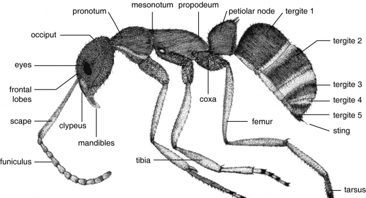

MäRchen: Text Mining mit den sieben Zwergen
Morphologische Analyse nach Propp
Der sowjetische Sprachwissenschaftler Vladimir Propp (1895-1970) hat 1928 - genau wie Sie gerade - russische Märchen miteinander verglichen und nach einem Muster gesucht. Er hat eine Morphologie des Märchens (Propp 1972) erstellt.
Das Wort Morphologie bedeutet, Propp beschreibt die Funktionen der verschiedenen Teile in einem Märchen. Er ist wie ein Biologe, der die Körperteile einer Ameise nach ihren Funktionen beschreibt. Ein Vergleich vieler Ameisen zeigt, dass alle Ameisen Augen zum Sehen, Fühler zum Riechen, Beine zum Laufen usw. haben.

Ein Vergleich vieler Märchen zeigt, dass alle Märchen Teile mit folgenden Funktionen haben. Nach Propp kommen nicht alle Funktionen in allen Märchen vor, aber sie erscheinen immer in dieser Reihenfolge.
- Entfernung
- Verbot
- Verstoß
- Nachforschung
- Denunziation
- Hinterhalt
- Mitwisserschaft
- Schädigung (oder Versäumnis)
- Vermittlung
- Zustimmung des Helden
- Aufbruch des Helden
- Prüfung des Helden durch den Spender
- Reaktion des Helden
- Lieferung des Zauberinstruments
- Ortswechsel des Helden
- Kampf zwischen dem Helden und seinem Gegenspieler
- Der gezeichnete Held
- Sieg über den Gegenspieler
- Abwendung des Unglücks oder Versagen wie am Beginn
- Rückkehr des Helden
- Seine Verfolgung
- Der Held rettet sich
- Der Held kehrt unerkannt nach Hause zurück
- Ansprüche des falschen Helden
- Dem Helden wird eine schwere Aufgabe auferlegt
- Ausführung der Aufgabe
- Anerkennung des Helden
- Entlarvung des falschen Helden oder des Gegenspielers
- Verwandlung des Helden
- Bestrafung des Gegenspielers
- Hochzeit des Helden